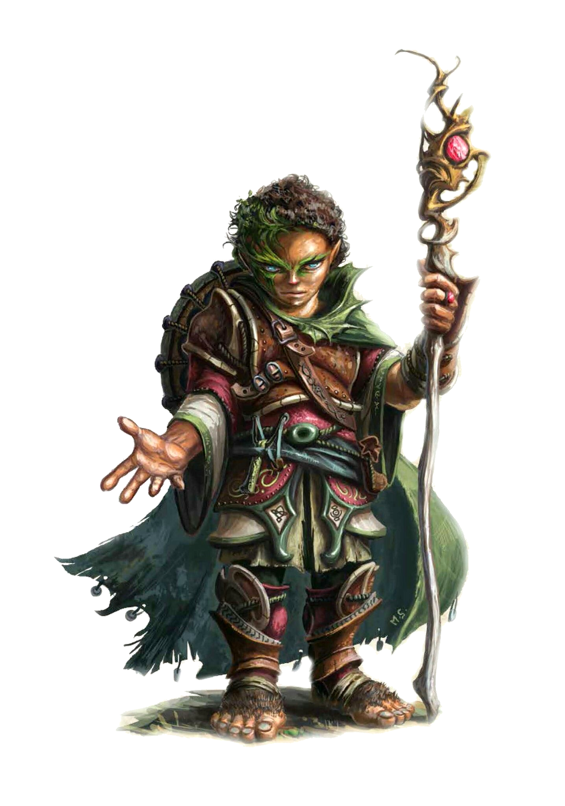

В чистоте стихий и природной гармонии лежит сила, недоступная цивилизации. Этой древнейшей магией пользуются стражи естественного равновесия - друиды. Друзья зверей и растений защищают дикие земли от любых угроз, а также открывают силу природы тем, кто прячется за городскими стенами. Среди горожан они не всегда находят понимание. Их верность делу вознаграждается могуществом: они обладают непревзойденной способностью менять облик, призывать гнев стихий и заводить верных спутников-зверей. Самые могущественные друиды вызывают бури, землетрясения и извержения вулканов, пользуясь знаниями, отринутыми цивилизацией.
Одни друиды держатся подальше от гущи боя - за них сражаются верные звери и призванные существа, пока сами они поражают врагов магией издалека. Другие превращаются в опасных зверей и бросаются в ближний бой. Друиды поклоняются персонификации стихий, силам природы или просто самой природе. Как правило, это означает служение божеству природы, но иногда - духам, звероподобным полубогам или отдельным впечатляющим природным явлениям.
Мировоззрение: Любое нейтральное.
КЗ:d8.
Стартовое богатство: 2d6 x 10 зм (70 зм в среднем).
Верховая езда (Лвк), Внимание (Мдр), Выживание (Мдр), Дрессировка (Хар), Знание (география) (Инт), Знание (природа) (Инт), Колдовство (Инт), Лазание (Сил), Лечение (Мдр), Плавание (Сил), Полет (Лвк), Профессия (Мдр), Ремесло (Инт)
Пункты навыков за уровень: 4 + модификатор Интеллекта.
| Ур | БМА | Стойкость | Реакция | Воля | Прочее | Закл/день (кр0) | Закл/день (кр1) | Закл/день (кр2) | Закл/день (кр3) | Закл/день (кр4) | Закл/день (кр5) | Закл/день (кр6) | Закл/день (кр7) | Закл/день (кр8) | Закл/день (кр9) |
|---|---|---|---|---|---|---|---|---|---|---|---|---|---|---|---|
| 1 | +0 | +2 | +0 | +2 | Связь с природой, чувство природы, молитвы, понимание животных | 3 | 1 | - | - | - | - | - | - | - | - |
| 2 | +1 | +3 | +0 | +3 | В лесу как дома | 4 | 2 | - | - | - | - | - | - | - | - |
| 3 | +2 | +3 | +1 | +3 | Тайные тропы | 4 | 2 | 1 | - | - | - | - | - | - | - |
| 4 | +3 | +4 | +1 | +4 | Неподвластный природе, природный облик (1/день) | 4 | 3 | 2 | - | - | - | - | - | - | - |
| 5 | +3 | +4 | +1 | +4 | 4 | 3 | 2 | 1 | - | - | - | - | - | - | |
| 6 | +4 | +5 | +2 | +5 | Природный облик (2/день) | 4 | 3 | 3 | 2 | - | - | - | - | - | - |
| 7 | +5 | +5 | +2 | +5 | 4 | 4 | 3 | 2 | 1 | - | - | - | - | - | |
| 8 | +6/+1 | +6 | +2 | +6 | Природный облик (3/день) | 4 | 4 | 3 | 3 | 2 | - | - | - | - | - |
| 9 | +6/+1 | +6 | +3 | +6 | Невосприимчивость к ядам | 4 | 4 | 4 | 3 | 2 | 1 | - | - | - | - |
| 10 | +7/+2 | +7 | +3 | +7 | Природный облик (4/день) | 4 | 4 | 4 | 3 | 3 | 2 | - | - | - | - |
| 11 | +8/+3 | +7 | +3 | +7 | 4 | 4 | 4 | 4 | 3 | 2 | 1 | - | - | - | |
| 12 | +9/4 | +8 | +4 | +8 | Природный облик (5/день) | 4 | 4 | 4 | 4 | 3 | 3 | 2 | - | - | - |
| 13 | +9/+4 | +8 | +4 | +8 | Тысяча лиц | 4 | 4 | 4 | 4 | 4 | 3 | 2 | 1 | - | - |
| 14 | +10/+5 | +9 | +4 | +9 | Природный облик (6/день) | 4 | 4 | 4 | 4 | 4 | 3 | 3 | 2 | - | - |
| 15 | +11/+6/+1 | +9 | +5 | +9 | Нестареющее тело | 4 | 4 | 4 | 4 | 4 | 4 | 3 | 2 | 1 | - |
| 16 | +12/+7/+2 | +10 | +5 | +10 | Природный облик (7/день) | 4 | 4 | 4 | 4 | 4 | 4 | 3 | 3 | 2 | - |
| 17 | +12/+7/+2 | +10 | +5 | +10 | 4 | 4 | 4 | 4 | 4 | 4 | 4 | 3 | 2 | 1 | |
| 18 | +13/+8/+3 | +11 | +6 | +11 | Природный облик (8/день) | 4 | 4 | 4 | 4 | 4 | 4 | 4 | 3 | 3 | 2 |
| 19 | +14/+9/+4 | +11 | +6 | +11 | 4 | 4 | 4 | 4 | 4 | 4 | 4 | 4 | 3 | 3 | |
| 20 | +15/+10/+5 | +12 | +6 | +12 | Природный облик (неограниченно) | 4 | 4 | 4 | 4 | 4 | 4 | 4 | 4 | 4 | 4 |
Ношение брони и обращение с оружием:Друид умеет обращаться со следующим оружием - дубинка, дротик, кинжал, коса, короткое и обычное копье, боевой посох, праща, серп и скимитар. Он может пользоваться естественными атаками (зубами, когтями и т. д.) любого существа, форму которого принимает с помощью способности природный облик (см. ниже). Друид также умеет использовать легкие и средние доспехи, но не может носить метллические доспехи, что обычно ограничивает его стеганым, кожаным и сыромятным доспехом.
Он также может носить деревянный доспех, сделанный с помощью заклинания железное дерево (и по прочим характеристикам соответствующий стальному). Друиды умеют пользоваться щитами (кроме башенных), но только сделанными из дерева.
Друид, который использует недопустимый доспех или щит, теряет возможность применять друидические заклинания, а также любые сверхъестественные способности и псевдозаклинания класса. Этот эффект длится все время, пока друид их использует, плюс 24 часа.
Заклинания:Друид умеет творить сакральные заклинания из списка. Друид не может применять заклинания, противоречащие его мировоззрению. Он выбирает и подготавливает заклинания к применению заранее. Чтобы изучить, подготовить и сотворить заклинание, друид должен иметь значение Мудрости не менее 10 + круг заклинания. СЛ испытания против эффекта заклинания друида равна 10 + круг заклинания + модификатор его Мудрости.
Подобно другим заклинателям, друид может применять ограниченное количество чар каждого круга в день. Его базовый дневной запас заклинаний приведен в таблице «Друид». Кроме того, он получает дополнительные заклинания в день, если у него достаточно высокая Мудрость (см. таблицу «Модификаторы характеристики и дополнительные заклинания»).
Каждый друид должен проводить 1 час в день в медитации, размышляя о тайнах природы, чтобы восстановить свой ежедневный запас заклинаний. Он может подготовить и применить любое заклинание из списка друида, если оно относится к доступному ему кругу, однако должен выбрать заклинания именно при подготовке во время ежедневной медитации.
Спонтанное сотворение:Друид может превращать подготовленные заклинания в заклинания призыва, применяя их без специальной подготовки. При этом он тратит любое подготовленное заклинание, чтобы сотворить любое заклинание призыв природного союзника того же или более низкого круга.
Добрые, злые, принципиальные и хаотичные заклинания:Друид не может творить заклинания с мировоззрением, противоположным его собственному или мировоззрению его божества (если у него такое есть). Заклинания с мировоззренческим аспектом имеют соответствующий дескриптор (добро, зло, принципиальность, хаос) в описаниях.
Молитвы:Друиды могут каждый день подготавливать несколько молитв (заклинаний 0 круга), как указано в таблице «Друид». Эти заклинания похожи на любые другие, но не тратятся при применении, и их можно использовать сколько угодно раз.
Дополнительные языки:Друид может выбрать в качестве дополнительного языка сильван - язык обитателей леса. Этот язык добавляется к списку возможных для его народа.
Друиды также знают друидический язык - тайный, известный только им, осваиваемый при получении 1 уровня в этом классе. Этот язык они получают бесплатно в дополнение к имеющимся. Им запрещено обучать этому языку тех, кто не является друидами. У друидического языка есть свой алфавит.
Связь с природой (Экс):На 1 уровне друид устанавливает особую связь с природой. Связь эта может проявляться одним из двух способов. Первый - это особая природная магия, дающая друиду доступ к одной из следующих сфер: Воды, Воздуха, Животных, Земли, Огня, Погоды или Растений. При определении доступных заклинаний и дарованных сил считается, что его уровень жреца равен его уровню друида. Друид, выбравший такую связь, получает ячейки заклинаний сферы - точно так же как жрец. Он обязан подготавливать в этих ячейках заклинания своей сферы, и их нельзя использовать для спонтанного сотворения.
Друид, который поклоняется божеству (в отличие от природы в целом), не может выбрать сферы животных или местности, которые противоречат или находится за пределами сферы влияния его божества.
Второй вариант связи - это обретение верного зверя. Друид при этом начинает игру с любым животным из перечисленных в разделе «Верные звери». Это животное сопровождает его в приключениях. В отличие от обычных животных того же вида, у верного зверя увеличивается количество КЗ, характеристики и навыки, а также появляются новые черты по мере роста уровня самого друида. Если персонаж получает верного зверя от более чем одного класса, его уровни друида складываются с уровнями всех остальных классов с этой способностью. Чаще всего верный зверь вырастает в размерах, когда друид достигает 4 или 7 уровня, в зависимости от вида животного.
Если друид отпускает своего верного зверя на свободу, то может завести нового. Для этого ему потребуется провести особый обряд, включающий в себя 24 часа непрерывной молитвы в той местности, где водятся животные такого вида. С помощью этого же обряда можно заменить погибшего верного зверя.
Чувство природы (Экс):Друид получает +2 к проверкам Знания (природа) и Выживания.
Понимание животных (Экс):Друид умеет улучшать отношение животных к нему. Эта способность работает аналогично проверке Дипломатии для улучшения отношения гуманоида. Для определения результатов проверки понимания животных друид бросает d20 и добавляет свой уровень друида и модификатор Харизмы. Домашнее животное изначально обычно безразлично, а дикое - недружелюбно.
Друид при этом должен быть не более чем в 30 футах от животного. Обычно подобное влияние на животное занимает 1 минуту - но, как и с людьми, это может получиться и быстрее, и медленнее.
Друид также может применить эту способность, чтобы улучшить отношение волшебного зверя с Интеллектом 1 или 2, но на такие проверки налагается штраф -4.
В лесу как дома (Экс):Начиная со 2 уровня друид может без помех двигаться по любому подлеску (включая колючие кустарники, заросли и иную подобную местность) со своей обычной скоростью, не получая урона. Магически созданные или заколдованные заросли и колючки действуют на него по обычным правилам.
Тайные тропы (Экс):Начиная с 3 уровня друид не оставляет следов, двигаясь по природной местности, и его невозможно выследить. Он может нарочно оставить след, если захочет.
Неподвластный природе (Экс):Начиная с 4 уровня друид получает бонус +4 к испытаниям против псевдозаклинаний и сверхъестественных способностей фей. Этот бонус также распространяется на испытания против заклинаний, использующих или направленных на растения и растительные материалы, - вроде опутывания, увядания, шипастой поросли и коробления.
Природный облик (Св):Начиная с 4 уровня друид обретает способность раз в день превращаться в любое животное небольшого или среднего размера. Друид может выбрать любое существо с типом «животное», которое ему приходилось наблюдать. Эта способность работает как облик зверя I со следующими отличиями. Эффект длится 1 час за уровень друида или пока друид не решит превратиться обратно. Смена облика (на звериный или обратно) требует основного действия и не провоцирует внеочередные атаки. Друид в зверином облике не может говорить - он только издает звуки, доступные такому животному без специального обучения, но способен общаться с другими животными того же вида, в представителя которого персонаж превращается, или схожего. Попугаи без специального обучения умеют только кричать, так что этот облик также не дает возможности говорить.
За каждые два уровня после 4 друид получает возможность применять эту способность еще раз в день, до 8 раз на 18 уровне. С 20 уровня друид может применять природный облик без ограничений. По мере роста в уровне друид овладевает способностью превращаться в зверей большего и меньшего размера, а также в элементалей и в растения. Любое такое превращение считается одним применением природного облика.
Начиная с 6 уровня друид может превращаться в животное крупного или маленького размера либо в элементаля небольшого размера. Облик животного при этом работает как облик зверя II, а облик элементаля - как стихийная форма I.
Начиная с 8 уровня друид может превращаться в животное огромного или миниатюрного размера, элементаля среднего размера, а также в растение небольшого или среднего размера. Облик животного при этом работает как облик зверя III, облик элементаля - как стихийная форма II, а облик растения - как облик растения I.
Начиная с 10 уровня друид может превращаться в элементаля крупного размера или растение крупного размера. Облик элементаля при этом работает как стихийная форма III, а облик растения - как облик растения II.
Начиная с 12 уровня друид может превращаться в элементаля огромного размера или растение огромного размера. Облик элементаля при этом работает как стихийная форма IV, а облик растения - как облик растения III.
Невосприимчивость к ядам (Экс):Начиная с 9 уровня друид становится невосприимчив к любым ядам.
Тысяча лиц (Св):На 13 уровне друид обретает способность менять свою внешность по желанию, как при помощи заклинания иной облик, но может воздействовать его эффектами только на свой первоначальный облик.
Нестареющее тело (Экс):Начиная с 15 уровня друид не получает штрафов к характеристикам за возраст и становится невосприимчив к магическому старению. Однако любые штрафы, появившиеся у него до этого момента, остаются. Бонусы за возраст применяются по обычным правилам. Хоть друид и не подвержен эффектам старения, он все равно умирает от старости, когда проживает весь свой срок.
Друид, переставший почитать природу, сменивший мировоззрение на недопустимое для класса или начавший учить друидическому языку непосвященных, теряет все заклинания и друидические способности (в том числе верного зверя, но умение обращаться с оружием, доспехами и щитами остается).
Он не имеет права более брать уровни класса друида, пока не искупит прегрешения (см. заклинание покаяние).
Назад к списку классов